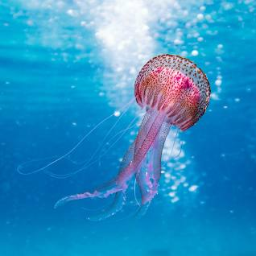

Jellyfish

Jellyfish are fascinating marine creatures known for their gelatinous bodies and graceful movements in the water.
Physical Characteristics
- Body Structure: Jellyfish have a gelatinous bell-shaped or umbrella-like body called a medusa.
- Tentacles: They have long, trailing tentacles that contain specialized cells called cnidocytes, which release venom to capture prey.
- Translucent Appearance: Jellyfish are often translucent or transparent, allowing light to pass through their bodies.
Behavior and Habitat
- Habitat: Jellyfish are found in oceans worldwide, from shallow coastal waters to the deep sea.
- Movement: They use a pulsating motion of their bell to propel themselves through the water, often drifting with ocean currents.
- Stinging Cells: The tentacles of jellyfish contain stinging cells that can deliver painful stings to predators and even humans.
Diet
Jellyfish are carnivorous and feed on plankton, small fish, and other small organisms that they capture with their tentacles.
Conservation Status
Jellyfish populations can fluctuate due to factors such as climate change, pollution, and overfishing of their predators.
Interesting Facts
- Life Cycle: Jellyfish have a complex life cycle involving both a stationary polyp stage and a free-swimming medusa stage.
- Bioluminescence: Some jellyfish species are bioluminescent, emitting light in the dark depths of the ocean.
- Non-Brain Structure: Jellyfish lack a centralized brain, but they have a simple nerve net that helps them respond to their environment.